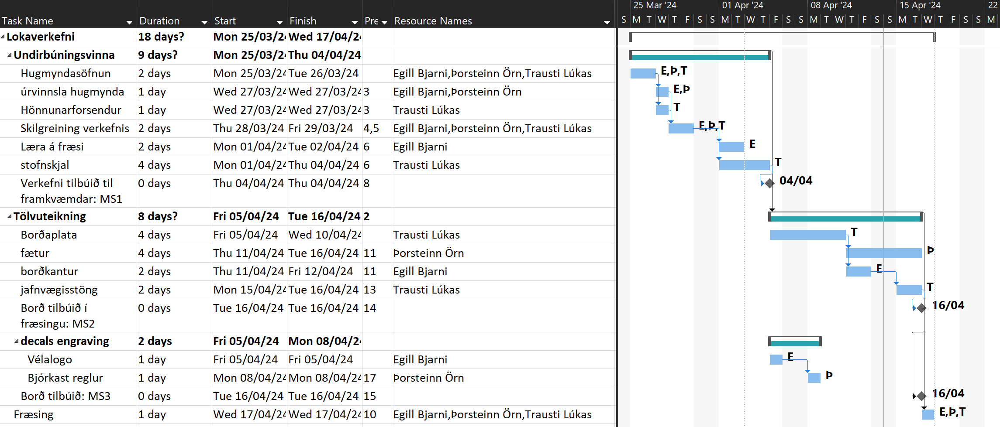
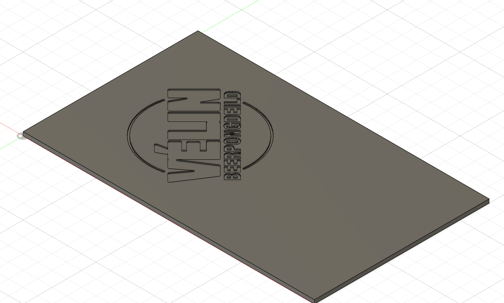
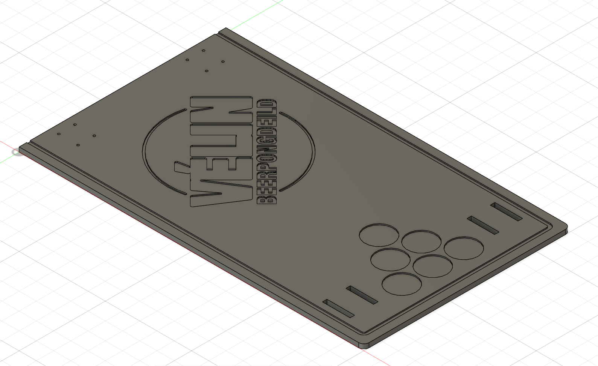
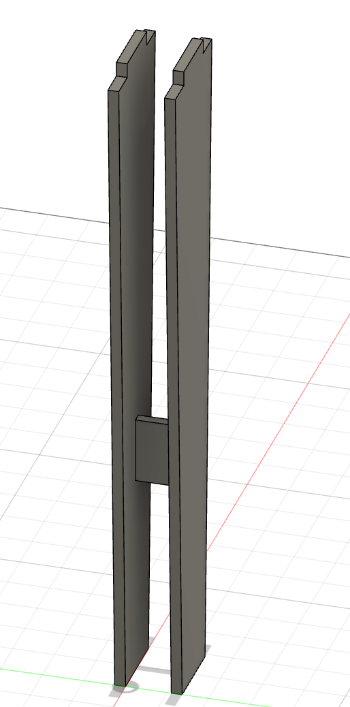
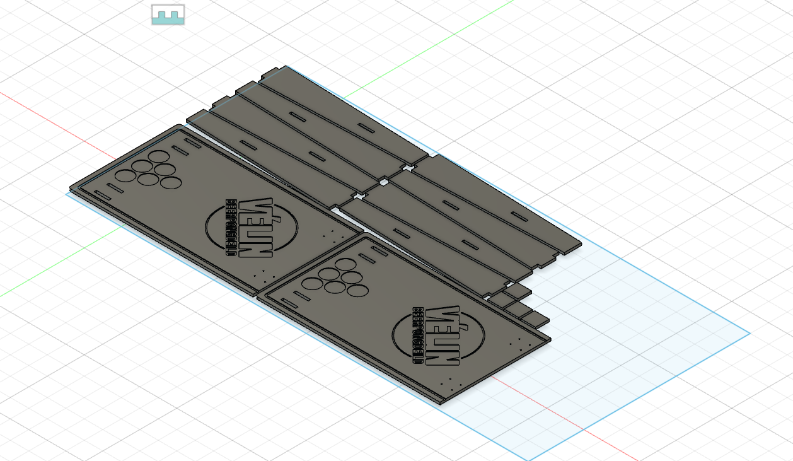
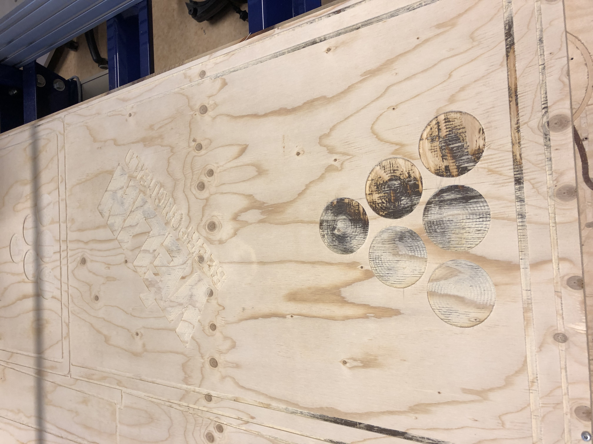
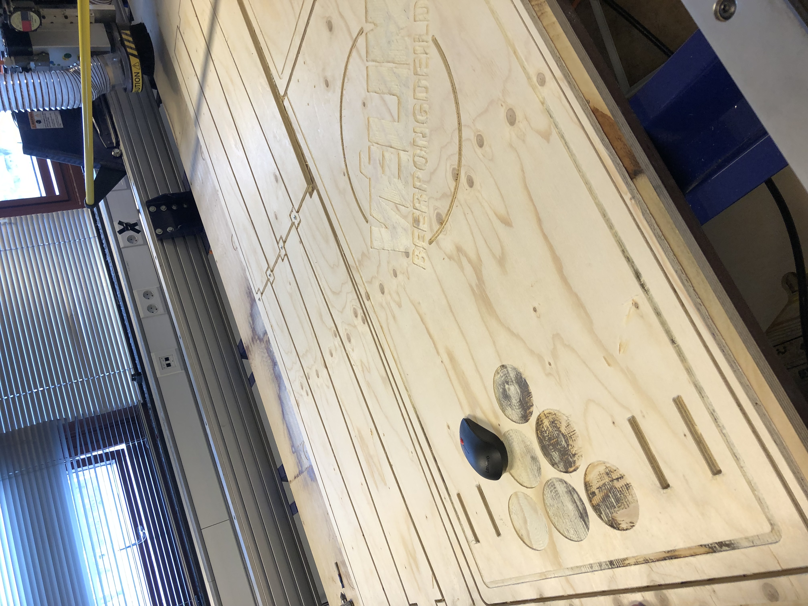
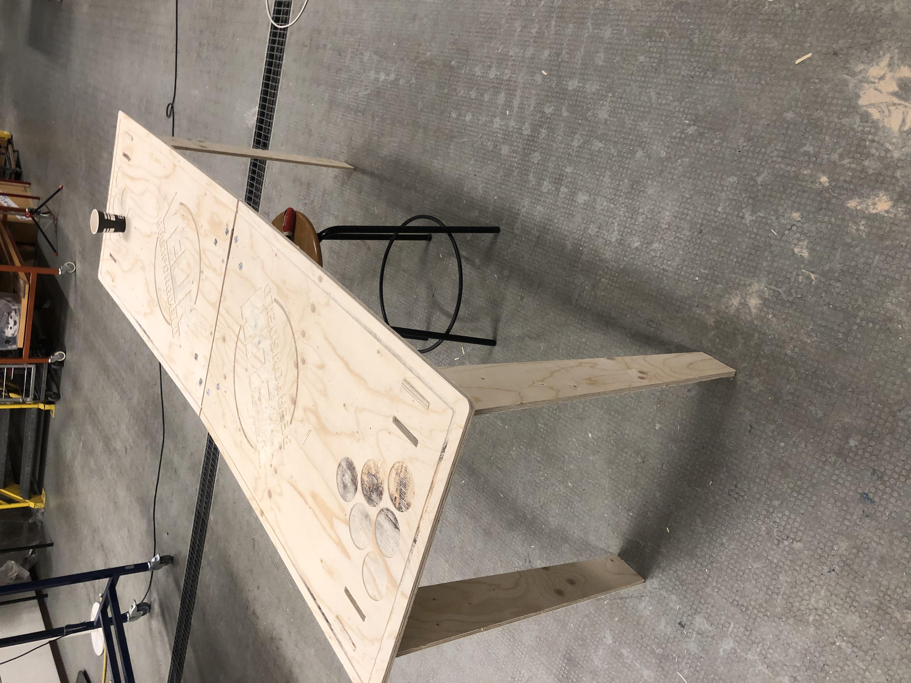
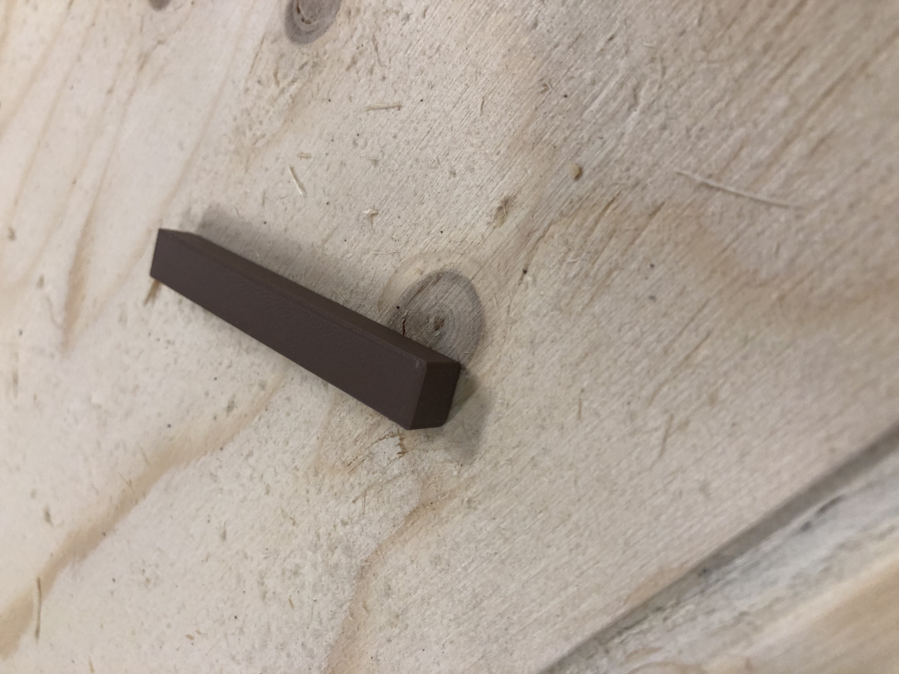
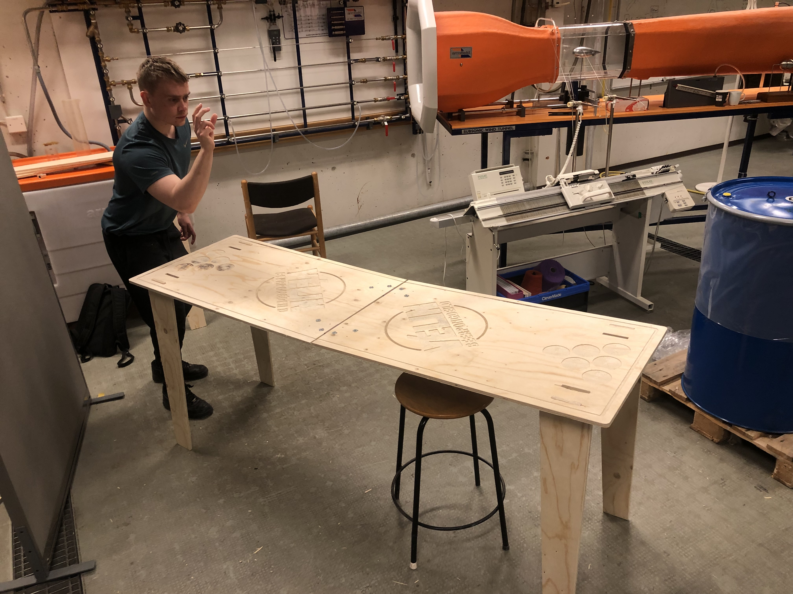

Verklýsing
Að þessu lokaverkefni unnu þeir: Egill Bjarni, Trausti Lúkas og Þorsteinn Örn. Markmið þessa verkefnis var að hann og búa til hlut með stærri fræsara. Strax í upphafi ákváðum við að samtvinna þetta lokaverkefni við lokaverkefni áfangans VÉL205M þar sem við vorum allir saman ásamt Aðalsteini Ara að búa til sjálfvirkan bjórkastsvél. Við ákvaðum að ekki væri hægt að sýna almennilega notkun vélarinnar nema með vel smíðuðu og sérsniðnu bjórkastsborði. Ásamt því að fræsa borðið út þá krefst verkefnið þess að við höldum utan um og setjum fram úthugsaða tímaáætlun sem og tímaskráningu.Undirbúningsfasi verkefnisins
Á fyrsta fundi settumst við saman niður og ákvörðuðum megin hönnunarkröfur verkefnis sem og skorður. Við ákváðum að borðið yrði hannað fyrir Beerpongdeild vélarinnar með merkingum klúbbsins sem og merkingum fyrir mikilvægar staðsetningar íhluta. Borðið átti að vera samanbrjótanlegt um miðja borðplötu svo auðvelt sé að flytja borðið á milli staðsetninga. Við lok fundar skrifuðum við allar upplýsingar inn í stofnskjal svo engar hugmyndir myndur glatast. Til þess að halda betur utan um þá verkþætti sem þörf var á að gera sem og til þess að uppfylla seinni lið lokaverkefnisins (verkefnastjórnunar þáttinn) þá setti Trausti upp ýtarlega tíma og kostnaðar áætlun fyrir verkefnið sem hægt er að nálgast á eftirfarandi hlekk sem og eftirfarandi mynd.

Mynd 1: Tímaáætlun verkefnis
Hönnunarfasi verkefnis
Ákveðið var að megin hönnunarpartur borðsins var borðplatan sjálf þar sem allir aðrir íhlutir tengjast við hana. Til að byrja með teiknuðu Egill og Þorsteinn rétthyrningslaga plötu og ristuðu í hana merkingu fyrir bjórkasts deild Vélarinnar líkt og má sjá á mynd 2:

Oftar en ekki endar bjórkastsleikur á því að fólk fari að sulla út um öll borð og ákváðum við því að hanna litla rennu sem ætti að koma í veg fyrir að vökvi myndi renna fram af borðinu. Hann myndi renna með rennunni að miðju borðsins og falla þar niður í fötu eða álíka söfnunarkerfi. Þar að auki hönnuðum við merkingar á borðið fyrir bjórglösin til þess að auðvelda uppsetningu á bjórkastsleiknum sem og teiknuðum göt á borðið til þess að tengja fæturnar við borðplötuna.
Mynd 2: Plata með merkingu bjórkastsdeild Vélarinnar

Þegar borðplatan var komin var ráðist á það að hanna fætur borðsins. Á eftirfarandi mynd er hægt að sjá samsetningarmynd fyrir hverng fót:
Mynd 3: Fullteiknuð borðplata

Nú er borðplatan 200x70 cm og er því þörf á töluverðum stuðning. Til þess að auka styrkleika fótanna þá voru þeir hannaðir með tveimur fótum í hverju horni. Með tveimur fótum fylgir þó aukinn óstöðugleiki en var það vandamál tæklað með því að bæta við þverbita sem tengist á milli fótanna í litlar holur á báðum fótum. Að lokum voru allir íhlutir settir saman í eina samsetningarmynd til þess að hægt væri að sjá nálgun á lokaniðurstöðu verkefnis en módelið er hægt að sjá í eftirfarandi Fusion hlekk.
Mynd 4: Samsetningarmynd af fótum borðsins
Fræsing á borði
Þegar öll undirbúningsvinnan var búin var þrívíddarmódelið flatt út svo hægt væri að undirbúa fræsiferlana eins og hægt er að sjá á eftirfarandi mynd. Blái kassinn táknar plötuna sem við fengum frá smíðadeild HÍ.

Í samstarfi við Hafliða voru síðan útbúnir fræsiferlar fyrir verkefnið. Til að byrja með var notast við downcut bor á merkingarnar og útlínur. Notast var við donwcut bor til þess að minnka grófleika á öllum hornum sem fræsirinn fræsti eftir. Næst var notast við v-bor til þess að fræsa út hringina í kringum Vélar merkið sem og til þess að merkja boltagot fyrir legurnar en þörf var á að nota v-bor þar sem þykktin á þessum holum var undir 6mm og var ekki til bor í þeirri stærð.
Mynd 5: Þrívíddarmódel flatt út

Mynd 6: Fræsing á borðinu

mynd 7: Fræsing á borðinu
Uppsetning á borði
Til að byrja með var gengið á að búa til göt fyrir fótana tvö sem vantaði með því að bora holur á rétta staði til þess að búa til opnu sem síðan var pússuð í rétt form með þjöl. Til þess að koma í veg fyrir flísar þá var einnig gengið á alla parta borðsins og horn sem og fletir pússarið. Þegar komið var að samsetningu var fyrst farið í BYKO og keyptar tvær lamir, átta bolta og átta gaddarær til þess að festa báðar borðplöturnar saman. Upprunalega hugsunin á festingu borðplötunnar var að borðplöturnar kæmu saman að fullu og myndu þannig koma í veg fyrir að borðið sveigist um miðju. Því miður var ekki gert ráð fyrir því þegar keyptar voru lamirnar og myndaðist því örlítið bil sem ölli töluverðri sveigju líkt og má sjá á mynd 8. Til þess að leysa þetta vandamál voru þrívíddaprentaðar lítil stykki til þess að fylla í götin líkt og má sjá á mynd 9

Mynd 8: Sveigja á borði

mynd 9: Leiðréttir fyrir sveigju

Mynd 5: Þrívíddarmódel flatt út